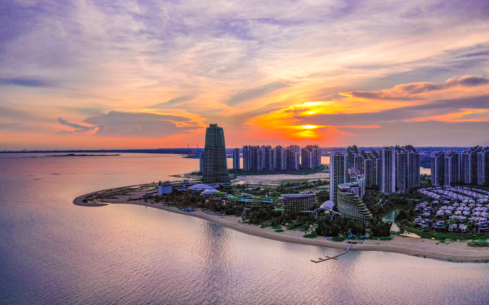
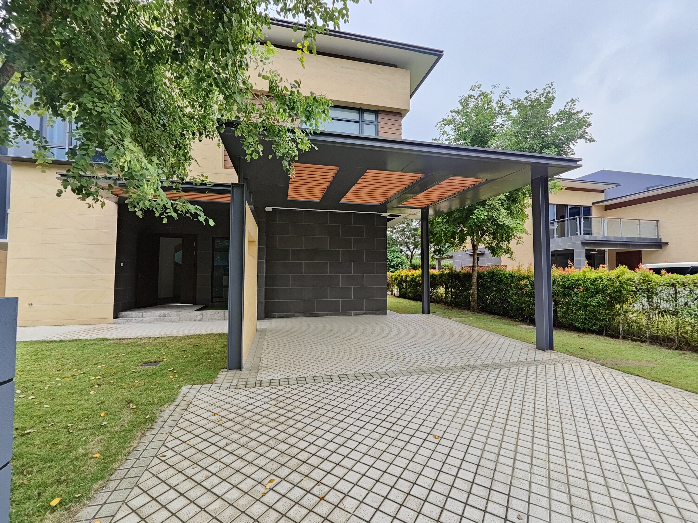
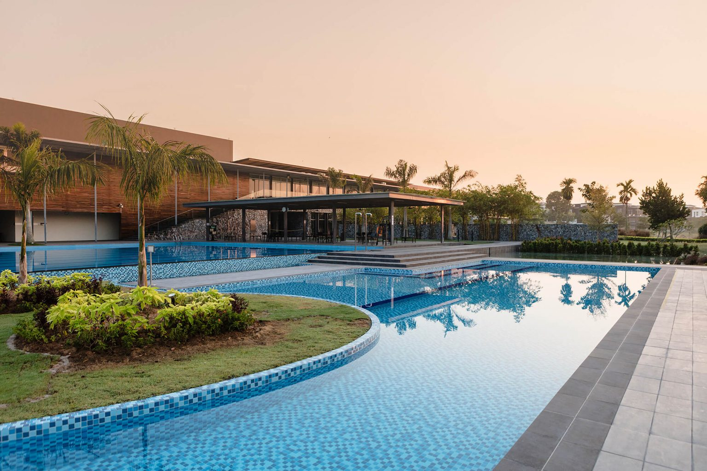
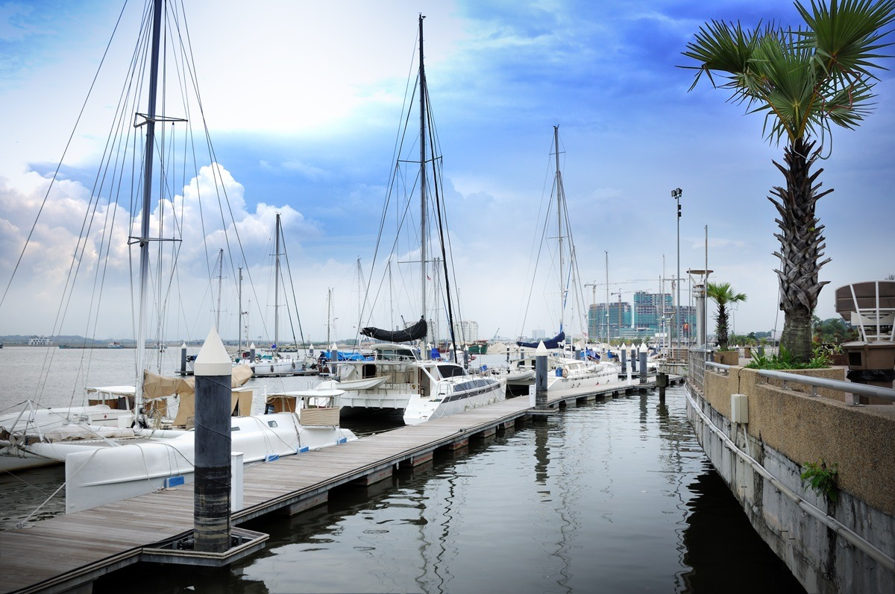
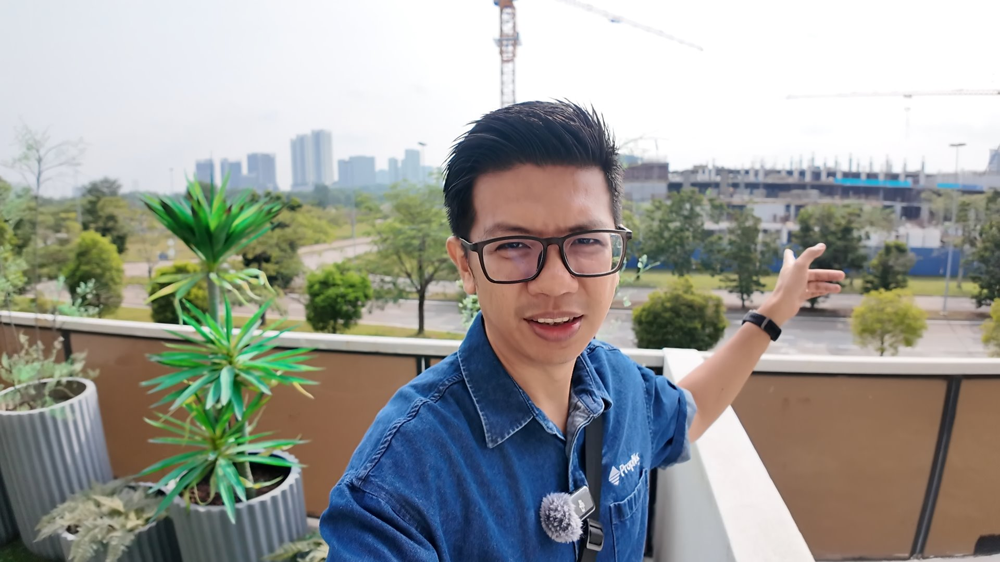

Johor Bahru · Iskandar Puteri · Forest City
Looking for
a Home in Johor?
在新山找房，不需要从几十个 Project 开始看。告诉我你的 budget、lifestyle 和 commute，我帮你先筛，再看。
WhatsApp Sam →A clearer way to buy · 更清楚的找房方式
How I Help You
Find the Right Home
我先了解你的需求，再从市场选择里把不适合的排除。The goal is not to show you more homes — it is to help you see the right ones.
01
Understand
Your Needs
先聊 budget、family、location 和 lifestyle，把真正重要的条件弄清楚。
02
Shortlist
The Right Options
从市场选择里先排除不适合的，只留下真正 worth considering 的几个方向。
03
Compare & View
先比较地点、房型和实际取舍，再安排 真正值得看的单位。
Areas & buyer services
What I Can Help You Explore

MM2H & Foreign BuyersProperty needs · Eligibility checks · Local context

Forest CityHigh-Rise · Golf Villa · Lifestyle Trade-offs

Horizon HillsLanded · Golf · Family Living
Iskandar PuteriLanded · Condos · Lifestyle

MediniNew Launch · Investment
CIQ / RTS AreaCross-border · Urban Living
Meet Sam
Hi, I'm
Sam Tee.
我主要服务 Johor Bahru、Iskandar Puteri 与 Forest City 的本地和外国买家，也协助 MM2H 客户从居住需求出发比较房产选择。
MM2H、外国人购房资格、费用和个别单位条件可能改变；我会先帮你整理房产方向，再建议你向合格的移民、法律或税务专业人士确认相关事项。
我的工作不是带你看更多房，而是帮你少走一点冤枉路。
WhatsApp Sam →
Local & Foreign BuyersNeeds-based property guidance
MM2H ContextProperty planning, not legal advice
Forest CityHigh-Rise & Golf Villa
Buyer-first AdviceBased on real needs
Free guide · 免费买房指南
Not Ready to
View Yet?
先用一份简单的 buyer guide，整理自己的 预算、用途、家庭需求和通勤。方向清楚以后，再开始看房也不迟。
- Who I help and how I shortlist
- How to choose the right area and buying route
- Useful checks before you start viewing
FREE BUYER GUIDEFind the Right Property in JohorSam Tee · The JB Residence
Want to do more research?
Explore The JB Residence
想自己先做功课？先看 buyer guides、area comparisons 和 property analysis，再决定下一步。
Visit My Website →